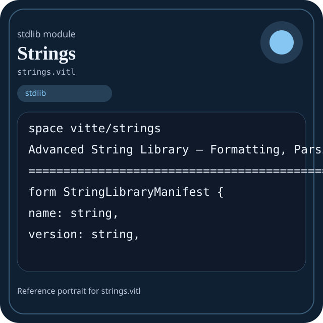

Stdlib module strings.vitl
This page is a wiki-style reference for one concrete stdlib file. It explains what the file owns, where it fits in the family, and how to decide whether this is the right surface to depend on.

strings.vitl.Family: stdlib
Kind: public stdlib surface
Page style: this reference follows the same “encyclopedic card + portrait + usage contract” logic as the keyword pages, but for stdlib modules.
Summary
- Overview
- Purpose
- Taxonomy
- Implementation profile
- Top-level API inventory
- Position in family
- Declaration map
- Representative signatures
- How to use this module
- User example
- Keyword coverage
- Source shape
- Source landmarks
- Source organization
- Complete API catalog
- Integration boundaries
- Composition guidance
- Relationship table
- Neighbor modules
Overview
| Field | Value |
|---|---|
| Path | strings.vitl |
| Family | stdlib |
| Kind | public stdlib surface |
| Line count | 787 |
| Declared procedures | 128 |
| Declared forms/picks | 19 |
`strings.vitl` is a public stdlib surface inside the `stdlib` family. It should be read as one focused slice of the broader family responsibility: Top-level map of the Vitte standard library and the responsibilities owned by each family.
Purpose
This file should be chosen because of responsibility, not because its name “sounds close enough”. Inside the stdlib family, it carries one focused part of the contract and keeps that responsibility separate from neighboring concerns.
- Domain values start in `core` and `strings`.
- Grouped data moves through `collections` or `data`.
- Structured export goes through `json` and `encoding`.
- Filesystem or process interaction goes through `path`, `io`, `os`, or `sysinfo`.
- Explicit runtime coordination goes through `async`, `threading`, `kernel`, or `ffi`.
Taxonomy
Think of this page as a generated encyclopedia entry rather than a hand-written tutorial. The goal is to show what kind of module this is, how dense it is, and what reading strategy makes sense before depending on it.
- Large algorithm surface: this file exposes many procedures and likely acts as a domain toolkit rather than a single thin wrapper.
- Owns domain vocabulary: the module declares data shapes in addition to executable helpers, so its types are part of the contract.
- Minimal top-level dependencies: the module reads as mostly self-contained from its opening declarations.
- Explicit export surface: the file ends with visible export declarations instead of relying only on implicit namespace discovery.
Implementation profile
This profile is inferred directly from the source text. It does not replace reading the file, but it tells you quickly whether the module is mostly declarative, loop-heavy, branch-heavy, or organized around many small exits.
| Signal | Count | What it suggests |
|---|---|---|
if | 0 | Branching density and local decision-making. |
while | 0 | Loop-heavy or iterative implementation style. |
for | 0 | Collection-style traversal at source level. |
match | 0 | Variant-driven branching or grammar-style decoding. |
let | 2 | Local state and intermediate value density. |
give | 127 | Number of explicit exit points and result shaping. |
Top-level API inventory
| Surface | Items |
|---|---|
| Procedures | sb_new, sb_append, sb_append_char, sb_append_int, sb_insert, sb_delete, sb_replace, sb_to_string, sb_clear, sb_length, sb_version, sb_ready |
| Forms | StringLibraryManifest, StringLibraryHealth, StringLibrarySummary, StringBuilder, StringBuilderReport, StringNormalizeReport, StringFormatReport, StringSearchReport, StringTokenizeReport, StringUnicodeReport, StringMetricsReport, StringTemplateReport |
| Picks | none declared at top level |
| Constants | none declared at top level |
| Exports | * |
Imported surfaces
This file does not advertise a top-level `use` surface in its opening declarations. That often means it is either self-contained or an aggregation layer.
Position in family
This file is module 14 of 15 in the stdlib family when ordered by path. By procedure count it ranks 4, and by line count it ranks 2. Those ranks are useful as rough signals of breadth, not as quality judgments.
Declaration map
The declaration map turns raw source into a scan-friendly catalog. It is useful when the file is large enough that a reader wants to orient by kinds of surfaces first.
| Line | Name | Kind | Role |
|---|---|---|---|
| 1 | vitte/strings | space | Declares the namespace that anchors this file in the stdlib tree. |
| 7 | StringLibraryManifest | form | Introduces a structured data shape that other procedures can exchange. |
| 13 | StringLibraryHealth | form | Introduces a structured data shape that other procedures can exchange. |
| 38 | StringLibrarySummary | form | Introduces a structured data shape that other procedures can exchange. |
| 43 | StringBuilder | form | Introduces a structured data shape that other procedures can exchange. |
| 49 | StringBuilderReport | form | Introduces a structured data shape that other procedures can exchange. |
| 56 | sb_new | proc | Represents one top-level surface in the file contract and should be read as part of the module boundary. |
| 64 | sb_append | proc | Represents one top-level surface in the file contract and should be read as part of the module boundary. |
| 70 | sb_append_char | proc | Represents one top-level surface in the file contract and should be read as part of the module boundary. |
| 75 | sb_append_int | proc | Represents one top-level surface in the file contract and should be read as part of the module boundary. |
| 80 | sb_insert | proc | Represents one top-level surface in the file contract and should be read as part of the module boundary. |
| 85 | sb_delete | proc | Represents one top-level surface in the file contract and should be read as part of the module boundary. |
| 89 | sb_replace | proc | Represents one top-level surface in the file contract and should be read as part of the module boundary. |
| 93 | sb_to_string | proc | Represents one top-level surface in the file contract and should be read as part of the module boundary. |
| 97 | sb_clear | proc | Represents one top-level surface in the file contract and should be read as part of the module boundary. |
| 102 | sb_length | proc | Represents one top-level surface in the file contract and should be read as part of the module boundary. |
| 106 | sb_version | proc | Represents one top-level surface in the file contract and should be read as part of the module boundary. |
| 110 | sb_ready | proc | Represents one top-level surface in the file contract and should be read as part of the module boundary. |
| 114 | sb_report | proc | Represents one top-level surface in the file contract and should be read as part of the module boundary. |
| 123 | sb_selftest | proc | Represents one top-level surface in the file contract and should be read as part of the module boundary. |
| 131 | strings_version | proc | Represents one top-level surface in the file contract and should be read as part of the module boundary. |
| 135 | strings_name | proc | Represents one top-level surface in the file contract and should be read as part of the module boundary. |
| 139 | strings_module_count | proc | Represents one top-level surface in the file contract and should be read as part of the module boundary. |
| 143 | strings_modules | proc | Represents one top-level surface in the file contract and should be read as part of the module boundary. |
| 168 | strings_manifest | proc | Represents one top-level surface in the file contract and should be read as part of the module boundary. |
| 176 | strings_ready | proc | Represents one top-level surface in the file contract and should be read as part of the module boundary. |
| 180 | strings_health | proc | Represents one top-level surface in the file contract and should be read as part of the module boundary. |
| 207 | strings_summary | proc | Represents one top-level surface in the file contract and should be read as part of the module boundary. |
| 214 | strings_selftest | proc | Represents one top-level surface in the file contract and should be read as part of the module boundary. |
| 221 | StringNormalizeReport | form | Introduces a structured data shape that other procedures can exchange. |
| 227 | StringFormatReport | form | Introduces a structured data shape that other procedures can exchange. |
| 233 | StringSearchReport | form | Introduces a structured data shape that other procedures can exchange. |
| 240 | StringTokenizeReport | form | Introduces a structured data shape that other procedures can exchange. |
| 246 | StringUnicodeReport | form | Introduces a structured data shape that other procedures can exchange. |
| 252 | StringMetricsReport | form | Introduces a structured data shape that other procedures can exchange. |
| 260 | StringTemplateReport | form | Introduces a structured data shape that other procedures can exchange. |
| 266 | StringPredicateReport | form | Introduces a structured data shape that other procedures can exchange. |
| 274 | StringTransformReport | form | Introduces a structured data shape that other procedures can exchange. |
| 280 | StringAsciiReport | form | Introduces a structured data shape that other procedures can exchange. |
| 286 | StringWhitespaceReport | form | Introduces a structured data shape that other procedures can exchange. |
| 292 | StringLocaleReport | form | Introduces a structured data shape that other procedures can exchange. |
| 298 | StringPatternReport | form | Introduces a structured data shape that other procedures can exchange. |
| 305 | StringInflectionReport | form | Introduces a structured data shape that other procedures can exchange. |
| 313 | str_starts_with | proc | Represents one top-level surface in the file contract and should be read as part of the module boundary. |
| 317 | str_ends_with | proc | Represents one top-level surface in the file contract and should be read as part of the module boundary. |
| 321 | str_contains | proc | Represents one top-level surface in the file contract and should be read as part of the module boundary. |
| 325 | str_index_of | proc | Represents one top-level surface in the file contract and should be read as part of the module boundary. |
| 329 | str_last_index_of | proc | Represents one top-level surface in the file contract and should be read as part of the module boundary. |
| 333 | str_substring | proc | Represents one top-level surface in the file contract and should be read as part of the module boundary. |
| 337 | str_split | proc | Owns path semantics, traversal, or normalization. |
| 341 | str_split_limit | proc | Owns path semantics, traversal, or normalization. |
| 345 | str_join | proc | Owns path semantics, traversal, or normalization. |
| 349 | str_repeat | proc | Represents one top-level surface in the file contract and should be read as part of the module boundary. |
| 353 | str_reverse | proc | Represents one top-level surface in the file contract and should be read as part of the module boundary. |
| 357 | str_pad_left | proc | Represents one top-level surface in the file contract and should be read as part of the module boundary. |
| 361 | str_pad_right | proc | Represents one top-level surface in the file contract and should be read as part of the module boundary. |
| 365 | str_center | proc | Represents one top-level surface in the file contract and should be read as part of the module boundary. |
| 369 | str_indent | proc | Represents one top-level surface in the file contract and should be read as part of the module boundary. |
| 373 | str_dedent | proc | Represents one top-level surface in the file contract and should be read as part of the module boundary. |
| 378 | str_uppercase | proc | Represents one top-level surface in the file contract and should be read as part of the module boundary. |
| 382 | str_lowercase | proc | Represents one top-level surface in the file contract and should be read as part of the module boundary. |
| 386 | str_title_case | proc | Represents one top-level surface in the file contract and should be read as part of the module boundary. |
| 390 | str_capitalize | proc | Represents one top-level surface in the file contract and should be read as part of the module boundary. |
| 394 | str_swap_case | proc | Represents one top-level surface in the file contract and should be read as part of the module boundary. |
| 399 | str_trim | proc | Represents one top-level surface in the file contract and should be read as part of the module boundary. |
| 403 | str_trim_left | proc | Represents one top-level surface in the file contract and should be read as part of the module boundary. |
| 407 | str_trim_right | proc | Represents one top-level surface in the file contract and should be read as part of the module boundary. |
| 411 | str_trim_chars | proc | Represents one top-level surface in the file contract and should be read as part of the module boundary. |
| 416 | str_equals | proc | Represents one top-level surface in the file contract and should be read as part of the module boundary. |
| 420 | str_equals_ignore_case | proc | Represents one top-level surface in the file contract and should be read as part of the module boundary. |
| 424 | str_compare | proc | Represents one top-level surface in the file contract and should be read as part of the module boundary. |
| 428 | str_levenshtein_distance | proc | Represents one top-level surface in the file contract and should be read as part of the module boundary. |
| 433 | str_escape | proc | Represents one top-level surface in the file contract and should be read as part of the module boundary. |
| 437 | str_unescape | proc | Represents one top-level surface in the file contract and should be read as part of the module boundary. |
| 441 | str_escape_quotes | proc | Represents one top-level surface in the file contract and should be read as part of the module boundary. |
| 445 | str_escape_newlines | proc | Represents one top-level surface in the file contract and should be read as part of the module boundary. |
| 450 | str_format | proc | Represents one top-level surface in the file contract and should be read as part of the module boundary. |
| 454 | str_interpolate | proc | Represents one top-level surface in the file contract and should be read as part of the module boundary. |
| 459 | is_digit | proc | Represents one top-level surface in the file contract and should be read as part of the module boundary. |
| 463 | is_alpha | proc | Represents one top-level surface in the file contract and should be read as part of the module boundary. |
| 467 | is_alnum | proc | Represents one top-level surface in the file contract and should be read as part of the module boundary. |
| 471 | is_space | proc | Represents one top-level surface in the file contract and should be read as part of the module boundary. |
| 475 | is_upper | proc | Represents one top-level surface in the file contract and should be read as part of the module boundary. |
| 479 | is_lower | proc | Represents one top-level surface in the file contract and should be read as part of the module boundary. |
| 483 | is_punct | proc | Represents one top-level surface in the file contract and should be read as part of the module boundary. |
| 487 | str_replace | proc | Represents one top-level surface in the file contract and should be read as part of the module boundary. |
| 491 | str_replace_all | proc | Represents one top-level surface in the file contract and should be read as part of the module boundary. |
| 495 | str_remove_prefix | proc | Represents one top-level surface in the file contract and should be read as part of the module boundary. |
| 499 | str_remove_suffix | proc | Represents one top-level surface in the file contract and should be read as part of the module boundary. |
| 503 | str_normalize_whitespace | proc | Represents one top-level surface in the file contract and should be read as part of the module boundary. |
| 507 | str_slug | proc | Represents one top-level surface in the file contract and should be read as part of the module boundary. |
| 511 | str_snake_case | proc | Represents one top-level surface in the file contract and should be read as part of the module boundary. |
| 515 | str_kebab_case | proc | Represents one top-level surface in the file contract and should be read as part of the module boundary. |
| 519 | str_camel_case | proc | Represents one top-level surface in the file contract and should be read as part of the module boundary. |
| 523 | str_pascal_case | proc | Represents one top-level surface in the file contract and should be read as part of the module boundary. |
| 527 | str_wrap | proc | Represents one top-level surface in the file contract and should be read as part of the module boundary. |
| 531 | str_lines | proc | Represents one top-level surface in the file contract and should be read as part of the module boundary. |
| 535 | str_words | proc | Represents one top-level surface in the file contract and should be read as part of the module boundary. |
| 539 | str_tokens | proc | Represents one top-level surface in the file contract and should be read as part of the module boundary. |
| 543 | str_count | proc | Represents one top-level surface in the file contract and should be read as part of the module boundary. |
| 547 | str_is_empty | proc | Represents one top-level surface in the file contract and should be read as part of the module boundary. |
| 551 | str_is_blank | proc | Represents one top-level surface in the file contract and should be read as part of the module boundary. |
| 555 | str_ascii_only | proc | Represents one top-level surface in the file contract and should be read as part of the module boundary. |
| 559 | str_repeat_char | proc | Represents one top-level surface in the file contract and should be read as part of the module boundary. |
| 563 | str_center_text | proc | Represents one top-level surface in the file contract and should be read as part of the module boundary. |
| 567 | str_truncate | proc | Represents one top-level surface in the file contract and should be read as part of the module boundary. |
| 571 | str_head | proc | Represents one top-level surface in the file contract and should be read as part of the module boundary. |
| 575 | str_tail | proc | Represents one top-level surface in the file contract and should be read as part of the module boundary. |
| 579 | str_normalize_report | proc | Represents one top-level surface in the file contract and should be read as part of the module boundary. |
| 587 | str_format_report | proc | Represents one top-level surface in the file contract and should be read as part of the module boundary. |
| 595 | str_search_report | proc | Represents one top-level surface in the file contract and should be read as part of the module boundary. |
| 604 | str_tokenize_report | proc | Represents one top-level surface in the file contract and should be read as part of the module boundary. |
| 612 | strings_max_report | proc | Represents one top-level surface in the file contract and should be read as part of the module boundary. |
| 616 | str_ascii_strip | proc | Represents one top-level surface in the file contract and should be read as part of the module boundary. |
| 620 | str_ascii_only_text | proc | Represents one top-level surface in the file contract and should be read as part of the module boundary. |
| 624 | str_whitespace_collapse | proc | Represents one top-level surface in the file contract and should be read as part of the module boundary. |
| 628 | str_whitespace_trim_lines | proc | Represents one top-level surface in the file contract and should be read as part of the module boundary. |
| 632 | str_locale_normalize | proc | Represents one top-level surface in the file contract and should be read as part of the module boundary. |
| 636 | str_locale_compare | proc | Represents one top-level surface in the file contract and should be read as part of the module boundary. |
| 640 | str_pattern_match | proc | Represents one top-level surface in the file contract and should be read as part of the module boundary. |
| 644 | str_pattern_replace | proc | Represents one top-level surface in the file contract and should be read as part of the module boundary. |
| 648 | str_pattern_find | proc | Represents one top-level surface in the file contract and should be read as part of the module boundary. |
| 652 | str_pluralize | proc | Represents one top-level surface in the file contract and should be read as part of the module boundary. |
| 656 | str_singularize | proc | Represents one top-level surface in the file contract and should be read as part of the module boundary. |
| 660 | str_inflect_count | proc | Represents one top-level surface in the file contract and should be read as part of the module boundary. |
| 664 | str_ascii_report | proc | Represents one top-level surface in the file contract and should be read as part of the module boundary. |
| 672 | str_whitespace_report | proc | Represents one top-level surface in the file contract and should be read as part of the module boundary. |
| 680 | str_locale_report | proc | Represents one top-level surface in the file contract and should be read as part of the module boundary. |
| 688 | str_pattern_report | proc | Represents one top-level surface in the file contract and should be read as part of the module boundary. |
| 697 | str_inflection_report | proc | Represents one top-level surface in the file contract and should be read as part of the module boundary. |
| 706 | str_unicode_normalize | proc | Represents one top-level surface in the file contract and should be read as part of the module boundary. |
| 710 | str_unicode_fold | proc | Represents one top-level surface in the file contract and should be read as part of the module boundary. |
| 714 | str_unicode_strip_accents | proc | Represents one top-level surface in the file contract and should be read as part of the module boundary. |
| 718 | str_length | proc | Represents one top-level surface in the file contract and should be read as part of the module boundary. |
| 722 | str_word_count | proc | Represents one top-level surface in the file contract and should be read as part of the module boundary. |
| 726 | str_line_count | proc | Represents one top-level surface in the file contract and should be read as part of the module boundary. |
| 730 | str_template_apply | proc | Represents one top-level surface in the file contract and should be read as part of the module boundary. |
| 734 | str_template_render | proc | Represents one top-level surface in the file contract and should be read as part of the module boundary. |
| 738 | str_template_expand | proc | Represents one top-level surface in the file contract and should be read as part of the module boundary. |
| 742 | str_is_empty_report | proc | Represents one top-level surface in the file contract and should be read as part of the module boundary. |
| 752 | str_transform_upper | proc | Represents one top-level surface in the file contract and should be read as part of the module boundary. |
| 756 | str_transform_lower | proc | Represents one top-level surface in the file contract and should be read as part of the module boundary. |
| 760 | str_transform_title | proc | Represents one top-level surface in the file contract and should be read as part of the module boundary. |
| 764 | str_transform_slug | proc | Represents one top-level surface in the file contract and should be read as part of the module boundary. |
| 768 | str_transform_snake | proc | Represents one top-level surface in the file contract and should be read as part of the module boundary. |
| 772 | str_transform_kebab | proc | Represents one top-level surface in the file contract and should be read as part of the module boundary. |
| 776 | str_transform_report | proc | Represents one top-level surface in the file contract and should be read as part of the module boundary. |
| 784 | string_report | proc | Represents one top-level surface in the file contract and should be read as part of the module boundary. |
The table is exhaustive for top-level declarations of the selected kinds. This file declares 148 matching surfaces.
Representative signatures
These signatures are shown in source order so the page keeps the feel of a reference manual, not just a keyword cloud.
form StringLibraryManifest {(line 7)form StringLibraryHealth {(line 13)form StringLibrarySummary {(line 38)form StringBuilder {(line 43)form StringBuilderReport {(line 49)proc sb_new(capacity: i32) -> StringBuilder {(line 56)proc sb_append(sb: StringBuilder, text_value: string) -> int {(line 64)proc sb_append_char(sb: StringBuilder, ch: i32) -> int {(line 70)proc sb_append_int(sb: StringBuilder, value: i32) -> int {(line 75)proc sb_insert(sb: StringBuilder, index: i32, text_value: string) -> int {(line 80)proc sb_delete(sb: StringBuilder, start: i32, end: i32) -> int {(line 85)proc sb_replace(sb: StringBuilder, oldstr: string, newstr: string) -> int {(line 89)proc sb_to_string(sb: StringBuilder) -> string {(line 93)proc sb_clear(sb: StringBuilder) {(line 97)proc sb_length(sb: StringBuilder) -> i32 {(line 102)proc sb_version() -> string {(line 106)proc sb_ready() -> bool {(line 110)proc sb_report(sb: StringBuilder) -> StringBuilderReport {(line 114)
The list is intentionally capped here; the source file declares 147 matching signatures in total.
How to use this module
Start by reading the file as an ownership boundary. Ask three questions: what enters this module, what stable types or procedures it exports, and what adjacent module should stay outside of it.
- Read
spaceand top-level imports first so the ownership boundary ofstrings.vitlis explicit. - Read declared forms and picks before algorithms so the data vocabulary is stable in your head.
- Traverse procedures in source order; the early helpers usually explain the naming and numeric conventions used later.
- Use the source landmarks section below as a table of contents when the file is large.
- Only after that compare neighbor modules, because the right boundary choice matters more than memorizing one helper name.
User example
This example is generated from the actual stdlib module surface. Its job is not to be the smallest snippet possible; its job is to show a realistic consumer-shaped file that exercises the module and mirrors the language keywords the module itself relies on.
space demo/strings
form DemoState {
ready: bool,
note: string
}
proc run_example() -> DemoState {
let ready: bool = sb_ready()
give DemoState { ready: ready, note: "ok" }
}
export run_exampleKeyword coverage
This table makes the “all keywords of the module” requirement auditable. It compares the detected Vitte keywords in the source file with the generated consumer example above.
| Keyword | Present in module source | Used in generated user example |
|---|---|---|
space | yes | yes |
form | yes | yes |
case | yes | no |
proc | yes | yes |
let | yes | yes |
give | yes | yes |
export | yes | yes |
true | yes | no |
and | yes | no |
Keywords still not exercised directly in the generated snippet: case, true, and. The page still lists them here so the gap is visible.
Source shape
space vitte/strings
form StringLibraryManifest {
name: string,
version: string,
modules: [string]
}
form StringLibraryHealth {
ready: bool,
module_count: i32,
builder_ready: bool,The excerpt is not meant to replace the file. It exists to make the module recognizable at first glance, the same way a Wikipedia infobox helps the reader orient before reading the whole article.
Source landmarks
Large files are easier to retain when they have visible landmarks. When the source contains explicit section banners, they are surfaced here; otherwise the first major declarations are used as anchors.
- Advanced String Library — Formatting, Parsing, Manipulation
Source organization
When a file carries its own internal chaptering, those chapters usually reveal the intended reading order better than a flat symbol list. This section reconstructs that organization from the source itself.
Opening declarations
Top-level items: 1. Procedures: 0. Data surfaces: 0. Constants: 0.
First visible names: vitte/strings
Advanced String Library — Formatting, Parsing, Manipulation
Top-level items: 148. Procedures: 128. Data surfaces: 19. Constants: 0.
First visible names: StringLibraryManifest, StringLibraryHealth, StringLibrarySummary, StringBuilder, StringBuilderReport, sb_new, sb_append, sb_append_char, sb_append_int, sb_insert
Complete API catalog
This catalog is the exhaustive file-level index for the module. It is intentionally closer to a generated encyclopedia appendix than to a tutorial summary.
Data surfaces
| Line | Name | Signature | Role |
|---|---|---|---|
| 7 | StringLibraryManifest | form StringLibraryManifest { | Introduces a structured data shape that other procedures can exchange. |
| 13 | StringLibraryHealth | form StringLibraryHealth { | Introduces a structured data shape that other procedures can exchange. |
| 38 | StringLibrarySummary | form StringLibrarySummary { | Introduces a structured data shape that other procedures can exchange. |
| 43 | StringBuilder | form StringBuilder { | Introduces a structured data shape that other procedures can exchange. |
| 49 | StringBuilderReport | form StringBuilderReport { | Introduces a structured data shape that other procedures can exchange. |
| 221 | StringNormalizeReport | form StringNormalizeReport { | Introduces a structured data shape that other procedures can exchange. |
| 227 | StringFormatReport | form StringFormatReport { | Introduces a structured data shape that other procedures can exchange. |
| 233 | StringSearchReport | form StringSearchReport { | Introduces a structured data shape that other procedures can exchange. |
| 240 | StringTokenizeReport | form StringTokenizeReport { | Introduces a structured data shape that other procedures can exchange. |
| 246 | StringUnicodeReport | form StringUnicodeReport { | Introduces a structured data shape that other procedures can exchange. |
| 252 | StringMetricsReport | form StringMetricsReport { | Introduces a structured data shape that other procedures can exchange. |
| 260 | StringTemplateReport | form StringTemplateReport { | Introduces a structured data shape that other procedures can exchange. |
| 266 | StringPredicateReport | form StringPredicateReport { | Introduces a structured data shape that other procedures can exchange. |
| 274 | StringTransformReport | form StringTransformReport { | Introduces a structured data shape that other procedures can exchange. |
| 280 | StringAsciiReport | form StringAsciiReport { | Introduces a structured data shape that other procedures can exchange. |
| 286 | StringWhitespaceReport | form StringWhitespaceReport { | Introduces a structured data shape that other procedures can exchange. |
| 292 | StringLocaleReport | form StringLocaleReport { | Introduces a structured data shape that other procedures can exchange. |
| 298 | StringPatternReport | form StringPatternReport { | Introduces a structured data shape that other procedures can exchange. |
| 305 | StringInflectionReport | form StringInflectionReport { | Introduces a structured data shape that other procedures can exchange. |
Procedures
| Line | Name | Signature | Role |
|---|---|---|---|
| 56 | sb_new | proc sb_new(capacity: i32) -> StringBuilder { | Represents one top-level surface in the file contract and should be read as part of the module boundary. |
| 64 | sb_append | proc sb_append(sb: StringBuilder, text_value: string) -> int { | Represents one top-level surface in the file contract and should be read as part of the module boundary. |
| 70 | sb_append_char | proc sb_append_char(sb: StringBuilder, ch: i32) -> int { | Represents one top-level surface in the file contract and should be read as part of the module boundary. |
| 75 | sb_append_int | proc sb_append_int(sb: StringBuilder, value: i32) -> int { | Represents one top-level surface in the file contract and should be read as part of the module boundary. |
| 80 | sb_insert | proc sb_insert(sb: StringBuilder, index: i32, text_value: string) -> int { | Represents one top-level surface in the file contract and should be read as part of the module boundary. |
| 85 | sb_delete | proc sb_delete(sb: StringBuilder, start: i32, end: i32) -> int { | Represents one top-level surface in the file contract and should be read as part of the module boundary. |
| 89 | sb_replace | proc sb_replace(sb: StringBuilder, oldstr: string, newstr: string) -> int { | Represents one top-level surface in the file contract and should be read as part of the module boundary. |
| 93 | sb_to_string | proc sb_to_string(sb: StringBuilder) -> string { | Represents one top-level surface in the file contract and should be read as part of the module boundary. |
| 97 | sb_clear | proc sb_clear(sb: StringBuilder) { | Represents one top-level surface in the file contract and should be read as part of the module boundary. |
| 102 | sb_length | proc sb_length(sb: StringBuilder) -> i32 { | Represents one top-level surface in the file contract and should be read as part of the module boundary. |
| 106 | sb_version | proc sb_version() -> string { | Represents one top-level surface in the file contract and should be read as part of the module boundary. |
| 110 | sb_ready | proc sb_ready() -> bool { | Represents one top-level surface in the file contract and should be read as part of the module boundary. |
| 114 | sb_report | proc sb_report(sb: StringBuilder) -> StringBuilderReport { | Represents one top-level surface in the file contract and should be read as part of the module boundary. |
| 123 | sb_selftest | proc sb_selftest() -> bool { | Represents one top-level surface in the file contract and should be read as part of the module boundary. |
| 131 | strings_version | proc strings_version() -> string { | Represents one top-level surface in the file contract and should be read as part of the module boundary. |
| 135 | strings_name | proc strings_name() -> string { | Represents one top-level surface in the file contract and should be read as part of the module boundary. |
| 139 | strings_module_count | proc strings_module_count() -> i32 { | Represents one top-level surface in the file contract and should be read as part of the module boundary. |
| 143 | strings_modules | proc strings_modules() -> [string] { | Represents one top-level surface in the file contract and should be read as part of the module boundary. |
| 168 | strings_manifest | proc strings_manifest() -> StringLibraryManifest { | Represents one top-level surface in the file contract and should be read as part of the module boundary. |
| 176 | strings_ready | proc strings_ready() -> bool { | Represents one top-level surface in the file contract and should be read as part of the module boundary. |
| 180 | strings_health | proc strings_health() -> StringLibraryHealth { | Represents one top-level surface in the file contract and should be read as part of the module boundary. |
| 207 | strings_summary | proc strings_summary() -> StringLibrarySummary { | Represents one top-level surface in the file contract and should be read as part of the module boundary. |
| 214 | strings_selftest | proc strings_selftest() -> bool { | Represents one top-level surface in the file contract and should be read as part of the module boundary. |
| 313 | str_starts_with | proc str_starts_with(text_value: string, prefix: string) -> int { | Represents one top-level surface in the file contract and should be read as part of the module boundary. |
| 317 | str_ends_with | proc str_ends_with(text_value: string, suffix: string) -> int { | Represents one top-level surface in the file contract and should be read as part of the module boundary. |
| 321 | str_contains | proc str_contains(text_value: string, substr: string) -> int { | Represents one top-level surface in the file contract and should be read as part of the module boundary. |
| 325 | str_index_of | proc str_index_of(text_value: string, substr: string) -> i32 { | Represents one top-level surface in the file contract and should be read as part of the module boundary. |
| 329 | str_last_index_of | proc str_last_index_of(text_value: string, substr: string) -> i32 { | Represents one top-level surface in the file contract and should be read as part of the module boundary. |
| 333 | str_substring | proc str_substring(text_value: string, start: i32, end: i32) -> string { | Represents one top-level surface in the file contract and should be read as part of the module boundary. |
| 337 | str_split | proc str_split(text_value: string, delimiter: string) -> [string] { | Owns path semantics, traversal, or normalization. |
| 341 | str_split_limit | proc str_split_limit(text_value: string, delimiter: string, limit: i32) -> [string] { | Owns path semantics, traversal, or normalization. |
| 345 | str_join | proc str_join(parts: [string], delimiter: string) -> string { | Owns path semantics, traversal, or normalization. |
| 349 | str_repeat | proc str_repeat(text_value: string, count: i32) -> string { | Represents one top-level surface in the file contract and should be read as part of the module boundary. |
| 353 | str_reverse | proc str_reverse(text_value: string) -> string { | Represents one top-level surface in the file contract and should be read as part of the module boundary. |
| 357 | str_pad_left | proc str_pad_left(text_value: string, width: i32, padchar: i32) -> string { | Represents one top-level surface in the file contract and should be read as part of the module boundary. |
| 361 | str_pad_right | proc str_pad_right(text_value: string, width: i32, padchar: i32) -> string { | Represents one top-level surface in the file contract and should be read as part of the module boundary. |
| 365 | str_center | proc str_center(text_value: string, width: i32, padchar: i32) -> string { | Represents one top-level surface in the file contract and should be read as part of the module boundary. |
| 369 | str_indent | proc str_indent(text_value: string, spaces: i32) -> string { | Represents one top-level surface in the file contract and should be read as part of the module boundary. |
| 373 | str_dedent | proc str_dedent(text_value: string) -> string { | Represents one top-level surface in the file contract and should be read as part of the module boundary. |
| 378 | str_uppercase | proc str_uppercase(text_value: string) -> string { | Represents one top-level surface in the file contract and should be read as part of the module boundary. |
| 382 | str_lowercase | proc str_lowercase(text_value: string) -> string { | Represents one top-level surface in the file contract and should be read as part of the module boundary. |
| 386 | str_title_case | proc str_title_case(text_value: string) -> string { | Represents one top-level surface in the file contract and should be read as part of the module boundary. |
| 390 | str_capitalize | proc str_capitalize(text_value: string) -> string { | Represents one top-level surface in the file contract and should be read as part of the module boundary. |
| 394 | str_swap_case | proc str_swap_case(text_value: string) -> string { | Represents one top-level surface in the file contract and should be read as part of the module boundary. |
| 399 | str_trim | proc str_trim(text_value: string) -> string { | Represents one top-level surface in the file contract and should be read as part of the module boundary. |
| 403 | str_trim_left | proc str_trim_left(text_value: string) -> string { | Represents one top-level surface in the file contract and should be read as part of the module boundary. |
| 407 | str_trim_right | proc str_trim_right(text_value: string) -> string { | Represents one top-level surface in the file contract and should be read as part of the module boundary. |
| 411 | str_trim_chars | proc str_trim_chars(text_value: string, chars: string) -> string { | Represents one top-level surface in the file contract and should be read as part of the module boundary. |
| 416 | str_equals | proc str_equals(str1: string, str2: string) -> int { | Represents one top-level surface in the file contract and should be read as part of the module boundary. |
| 420 | str_equals_ignore_case | proc str_equals_ignore_case(str1: string, str2: string) -> int { | Represents one top-level surface in the file contract and should be read as part of the module boundary. |
| 424 | str_compare | proc str_compare(str1: string, str2: string) -> int { | Represents one top-level surface in the file contract and should be read as part of the module boundary. |
| 428 | str_levenshtein_distance | proc str_levenshtein_distance(str1: string, str2: string) -> i32 { | Represents one top-level surface in the file contract and should be read as part of the module boundary. |
| 433 | str_escape | proc str_escape(text_value: string) -> string { | Represents one top-level surface in the file contract and should be read as part of the module boundary. |
| 437 | str_unescape | proc str_unescape(text_value: string) -> string { | Represents one top-level surface in the file contract and should be read as part of the module boundary. |
| 441 | str_escape_quotes | proc str_escape_quotes(text_value: string) -> string { | Represents one top-level surface in the file contract and should be read as part of the module boundary. |
| 445 | str_escape_newlines | proc str_escape_newlines(text_value: string) -> string { | Represents one top-level surface in the file contract and should be read as part of the module boundary. |
| 450 | str_format | proc str_format(template: string, args: [string]) -> string { | Represents one top-level surface in the file contract and should be read as part of the module boundary. |
| 454 | str_interpolate | proc str_interpolate(template: string) -> string { | Represents one top-level surface in the file contract and should be read as part of the module boundary. |
| 459 | is_digit | proc is_digit(ch: i32) -> int { | Represents one top-level surface in the file contract and should be read as part of the module boundary. |
| 463 | is_alpha | proc is_alpha(ch: i32) -> int { | Represents one top-level surface in the file contract and should be read as part of the module boundary. |
| 467 | is_alnum | proc is_alnum(ch: i32) -> int { | Represents one top-level surface in the file contract and should be read as part of the module boundary. |
| 471 | is_space | proc is_space(ch: i32) -> int { | Represents one top-level surface in the file contract and should be read as part of the module boundary. |
| 475 | is_upper | proc is_upper(ch: i32) -> int { | Represents one top-level surface in the file contract and should be read as part of the module boundary. |
| 479 | is_lower | proc is_lower(ch: i32) -> int { | Represents one top-level surface in the file contract and should be read as part of the module boundary. |
| 483 | is_punct | proc is_punct(ch: i32) -> int { | Represents one top-level surface in the file contract and should be read as part of the module boundary. |
| 487 | str_replace | proc str_replace(text_value: string, oldstr: string, newstr: string) -> string { | Represents one top-level surface in the file contract and should be read as part of the module boundary. |
| 491 | str_replace_all | proc str_replace_all(text_value: string, oldstr: string, newstr: string) -> string { | Represents one top-level surface in the file contract and should be read as part of the module boundary. |
| 495 | str_remove_prefix | proc str_remove_prefix(text_value: string, prefix: string) -> string { | Represents one top-level surface in the file contract and should be read as part of the module boundary. |
| 499 | str_remove_suffix | proc str_remove_suffix(text_value: string, suffix: string) -> string { | Represents one top-level surface in the file contract and should be read as part of the module boundary. |
| 503 | str_normalize_whitespace | proc str_normalize_whitespace(text_value: string) -> string { | Represents one top-level surface in the file contract and should be read as part of the module boundary. |
| 507 | str_slug | proc str_slug(text_value: string) -> string { | Represents one top-level surface in the file contract and should be read as part of the module boundary. |
| 511 | str_snake_case | proc str_snake_case(text_value: string) -> string { | Represents one top-level surface in the file contract and should be read as part of the module boundary. |
| 515 | str_kebab_case | proc str_kebab_case(text_value: string) -> string { | Represents one top-level surface in the file contract and should be read as part of the module boundary. |
| 519 | str_camel_case | proc str_camel_case(text_value: string) -> string { | Represents one top-level surface in the file contract and should be read as part of the module boundary. |
| 523 | str_pascal_case | proc str_pascal_case(text_value: string) -> string { | Represents one top-level surface in the file contract and should be read as part of the module boundary. |
| 527 | str_wrap | proc str_wrap(text_value: string, width: i32) -> [string] { | Represents one top-level surface in the file contract and should be read as part of the module boundary. |
| 531 | str_lines | proc str_lines(text_value: string) -> [string] { | Represents one top-level surface in the file contract and should be read as part of the module boundary. |
| 535 | str_words | proc str_words(text_value: string) -> [string] { | Represents one top-level surface in the file contract and should be read as part of the module boundary. |
| 539 | str_tokens | proc str_tokens(text_value: string) -> [string] { | Represents one top-level surface in the file contract and should be read as part of the module boundary. |
| 543 | str_count | proc str_count(text_value: string, needle: string) -> i32 { | Represents one top-level surface in the file contract and should be read as part of the module boundary. |
| 547 | str_is_empty | proc str_is_empty(text_value: string) -> int { | Represents one top-level surface in the file contract and should be read as part of the module boundary. |
| 551 | str_is_blank | proc str_is_blank(text_value: string) -> int { | Represents one top-level surface in the file contract and should be read as part of the module boundary. |
| 555 | str_ascii_only | proc str_ascii_only(text_value: string) -> int { | Represents one top-level surface in the file contract and should be read as part of the module boundary. |
| 559 | str_repeat_char | proc str_repeat_char(ch: i32, count: i32) -> string { | Represents one top-level surface in the file contract and should be read as part of the module boundary. |
| 563 | str_center_text | proc str_center_text(text_value: string, width: i32) -> string { | Represents one top-level surface in the file contract and should be read as part of the module boundary. |
| 567 | str_truncate | proc str_truncate(text_value: string, width: i32) -> string { | Represents one top-level surface in the file contract and should be read as part of the module boundary. |
| 571 | str_head | proc str_head(text_value: string, count: i32) -> string { | Represents one top-level surface in the file contract and should be read as part of the module boundary. |
| 575 | str_tail | proc str_tail(text_value: string, count: i32) -> string { | Represents one top-level surface in the file contract and should be read as part of the module boundary. |
| 579 | str_normalize_report | proc str_normalize_report(text_value: string) -> StringNormalizeReport { | Represents one top-level surface in the file contract and should be read as part of the module boundary. |
| 587 | str_format_report | proc str_format_report(template: string) -> StringFormatReport { | Represents one top-level surface in the file contract and should be read as part of the module boundary. |
| 595 | str_search_report | proc str_search_report(haystack: string, needle: string) -> StringSearchReport { | Represents one top-level surface in the file contract and should be read as part of the module boundary. |
| 604 | str_tokenize_report | proc str_tokenize_report(text_value: string) -> StringTokenizeReport { | Represents one top-level surface in the file contract and should be read as part of the module boundary. |
| 612 | strings_max_report | proc strings_max_report() -> StringLibrarySummary { | Represents one top-level surface in the file contract and should be read as part of the module boundary. |
| 616 | str_ascii_strip | proc str_ascii_strip(text_value: string) -> string { | Represents one top-level surface in the file contract and should be read as part of the module boundary. |
| 620 | str_ascii_only_text | proc str_ascii_only_text(text_value: string) -> string { | Represents one top-level surface in the file contract and should be read as part of the module boundary. |
| 624 | str_whitespace_collapse | proc str_whitespace_collapse(text_value: string) -> string { | Represents one top-level surface in the file contract and should be read as part of the module boundary. |
| 628 | str_whitespace_trim_lines | proc str_whitespace_trim_lines(text_value: string) -> string { | Represents one top-level surface in the file contract and should be read as part of the module boundary. |
| 632 | str_locale_normalize | proc str_locale_normalize(text_value: string) -> string { | Represents one top-level surface in the file contract and should be read as part of the module boundary. |
| 636 | str_locale_compare | proc str_locale_compare(str1: string, str2: string) -> i32 { | Represents one top-level surface in the file contract and should be read as part of the module boundary. |
| 640 | str_pattern_match | proc str_pattern_match(text_value: string, pattern: string) -> int { | Represents one top-level surface in the file contract and should be read as part of the module boundary. |
| 644 | str_pattern_replace | proc str_pattern_replace(text_value: string, pattern: string, replacement: string) -> string { | Represents one top-level surface in the file contract and should be read as part of the module boundary. |
| 648 | str_pattern_find | proc str_pattern_find(text_value: string, pattern: string) -> i32 { | Represents one top-level surface in the file contract and should be read as part of the module boundary. |
| 652 | str_pluralize | proc str_pluralize(text_value: string) -> string { | Represents one top-level surface in the file contract and should be read as part of the module boundary. |
| 656 | str_singularize | proc str_singularize(text_value: string) -> string { | Represents one top-level surface in the file contract and should be read as part of the module boundary. |
| 660 | str_inflect_count | proc str_inflect_count(word: string, count: i32) -> string { | Represents one top-level surface in the file contract and should be read as part of the module boundary. |
| 664 | str_ascii_report | proc str_ascii_report(text_value: string) -> StringAsciiReport { | Represents one top-level surface in the file contract and should be read as part of the module boundary. |
| 672 | str_whitespace_report | proc str_whitespace_report(text_value: string) -> StringWhitespaceReport { | Represents one top-level surface in the file contract and should be read as part of the module boundary. |
| 680 | str_locale_report | proc str_locale_report(text_value: string) -> StringLocaleReport { | Represents one top-level surface in the file contract and should be read as part of the module boundary. |
| 688 | str_pattern_report | proc str_pattern_report(text_value: string, pattern: string) -> StringPatternReport { | Represents one top-level surface in the file contract and should be read as part of the module boundary. |
| 697 | str_inflection_report | proc str_inflection_report(text_value: string) -> StringInflectionReport { | Represents one top-level surface in the file contract and should be read as part of the module boundary. |
| 706 | str_unicode_normalize | proc str_unicode_normalize(text_value: string) -> string { | Represents one top-level surface in the file contract and should be read as part of the module boundary. |
| 710 | str_unicode_fold | proc str_unicode_fold(text_value: string) -> string { | Represents one top-level surface in the file contract and should be read as part of the module boundary. |
| 714 | str_unicode_strip_accents | proc str_unicode_strip_accents(text_value: string) -> string { | Represents one top-level surface in the file contract and should be read as part of the module boundary. |
| 718 | str_length | proc str_length(text_value: string) -> i32 { | Represents one top-level surface in the file contract and should be read as part of the module boundary. |
| 722 | str_word_count | proc str_word_count(text_value: string) -> i32 { | Represents one top-level surface in the file contract and should be read as part of the module boundary. |
| 726 | str_line_count | proc str_line_count(text_value: string) -> i32 { | Represents one top-level surface in the file contract and should be read as part of the module boundary. |
| 730 | str_template_apply | proc str_template_apply(template: string, data: [string]) -> string { | Represents one top-level surface in the file contract and should be read as part of the module boundary. |
| 734 | str_template_render | proc str_template_render(template: string) -> string { | Represents one top-level surface in the file contract and should be read as part of the module boundary. |
| 738 | str_template_expand | proc str_template_expand(template: string) -> string { | Represents one top-level surface in the file contract and should be read as part of the module boundary. |
| 742 | str_is_empty_report | proc str_is_empty_report(text_value: string) -> StringPredicateReport { | Represents one top-level surface in the file contract and should be read as part of the module boundary. |
| 752 | str_transform_upper | proc str_transform_upper(text_value: string) -> string { | Represents one top-level surface in the file contract and should be read as part of the module boundary. |
| 756 | str_transform_lower | proc str_transform_lower(text_value: string) -> string { | Represents one top-level surface in the file contract and should be read as part of the module boundary. |
| 760 | str_transform_title | proc str_transform_title(text_value: string) -> string { | Represents one top-level surface in the file contract and should be read as part of the module boundary. |
| 764 | str_transform_slug | proc str_transform_slug(text_value: string) -> string { | Represents one top-level surface in the file contract and should be read as part of the module boundary. |
| 768 | str_transform_snake | proc str_transform_snake(text_value: string) -> string { | Represents one top-level surface in the file contract and should be read as part of the module boundary. |
| 772 | str_transform_kebab | proc str_transform_kebab(text_value: string) -> string { | Represents one top-level surface in the file contract and should be read as part of the module boundary. |
| 776 | str_transform_report | proc str_transform_report(text_value: string) -> StringTransformReport { | Represents one top-level surface in the file contract and should be read as part of the module boundary. |
| 784 | string_report | proc string_report() -> StringLibrarySummary { | Represents one top-level surface in the file contract and should be read as part of the module boundary. |
Exports
| Line | Name | Signature | Role |
|---|---|---|---|
| 787 | * | export * | Re-exports surfaces that the module wants to expose as part of its public boundary. |
Integration boundaries
Within stdlib, this file should remain focused. If a future helper changes the host boundary, scheduling boundary, or data-shape boundary, it probably belongs in a neighbor module instead of being added here by convenience.
- Family responsibility: Top-level map of the Vitte standard library and the responsibilities owned by each family.
- Family architecture role: A realistic Vitte program usually starts in `core`, grows through `collections` or `data`, crosses textual boundaries with `json` or `encoding`, touches the host with `path` or `io`, and only then reaches system-facing families like `kernel`, `ffi`, `async`, or `threading`.
Composition guidance
Choose this module when
- Choose
strings.vitlwhen the main question is owned by this module rather than by transport, storage, orchestration, or user-interface code. - Domain values start in `core` and `strings`.
- Grouped data moves through `collections` or `data`.
- Structured export goes through `json` and `encoding`.
- Filesystem or process interaction goes through `path`, `io`, `os`, or `sysinfo`.
- Explicit runtime coordination goes through `async`, `threading`, `kernel`, or `ffi`.
Pause before extending it when
- Avoid extending this file when the new helper mostly changes the boundary to host I/O, runtime coordination, or foreign integration instead of staying inside
stdlib. - Check nearby modules such as
GETTING_STARTED.vitl,core_alias.vitl,datetime.vitlbefore adding convenience wrappers here.
Relationship table
This table keeps the page closer to a real encyclopedia entry: a module is easier to understand when compared with its nearest alternatives in the same family.
| Neighbor | Procedures | Data surfaces | Why compare it |
|---|---|---|---|
GETTING_STARTED.vitl | 26 | 0 | Shares the same family boundary but carries a distinct slice of responsibility. |
core_alias.vitl | 0 | 0 | Shares the same family boundary but carries a distinct slice of responsibility. |
datetime.vitl | 138 | 16 | Shares the same family boundary but carries a distinct slice of responsibility. |
graphics.vitl | 5 | 0 | Shares the same family boundary but carries a distinct slice of responsibility. |
memory.vitl | 137 | 16 | Shares the same family boundary but carries a distinct slice of responsibility. |
mod.vit | 16 | 2 | Shares the same family boundary but carries a distinct slice of responsibility. |
network/http.vitl | 4 | 2 | Shares the same family boundary but carries a distinct slice of responsibility. |
network/socket.vitl | 5 | 2 | Shares the same family boundary but carries a distinct slice of responsibility. |